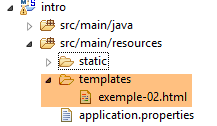
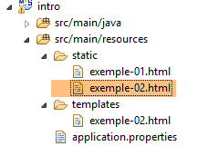
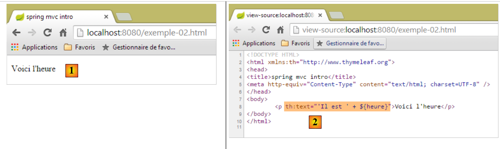
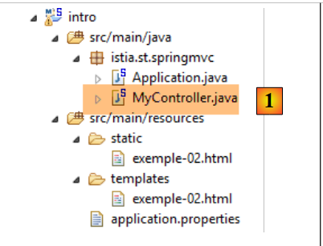
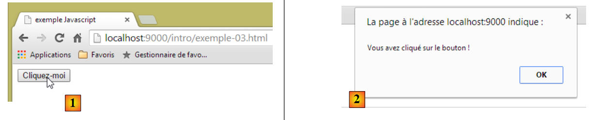
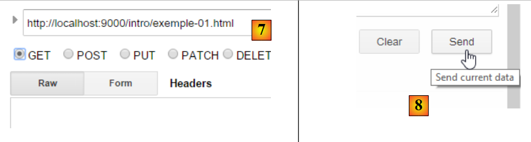
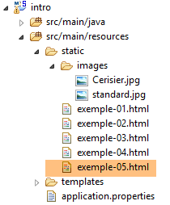
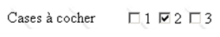
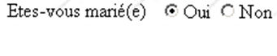

2. Die Grundlagen der Webprogrammierung
Der Hauptzweck dieses Kapitels besteht darin, die wichtigsten Prinzipien der Webprogrammierung vorzustellen, die unabhängig von der spezifischen Technologie sind, mit der sie umgesetzt werden. Es enthält zahlreiche Beispiele, die Sie ausprobieren sollten, um die Philosophie der Webentwicklung nach und nach zu „verinnerlichen“. Leser, die dieses Wissen bereits besitzen, können direkt mit Kapitel 3 fortfahren.
Die Komponenten einer Webanwendung sind wie folgt:

Nummer | Rolle | Häufige Beispiele |
1 | Server-Betriebssystem | Unix, Linux, Windows |
2 | Webserver | Apache (Unix, Linux, Windows) IIS (Windows + .NET-Plattform) Node.js (Unix, Linux, Windows) |
3 | Serverseitiger Code. Er kann von Servermodulen oder von Programmen außerhalb des Servers (CGI) ausgeführt werden. | JAVASCRIPT (Node.js) PHP (Apache, IIS) JAVA (Tomcat, WebSphere, JBoss, WebLogic, ...) C#, VB.NET (IIS) |
4 | Datenbank – Diese kann sich auf demselben Rechner wie das Programm befinden, das sie nutzt, oder über das Internet auf einem anderen Rechner. | Oracle (Linux, Windows) MySQL (Linux, Windows) Postgres (Linux, Windows) SQL Server (Windows) |
5 | Client-Betriebssystem | Unix, Linux, Windows |
6 | Webbrowser | Chrome, Internet Explorer, Firefox, Opera, Safari, ... |
7 | Clientseitige Skripte, die im Browser ausgeführt werden. Diese Skripte haben keinen Zugriff auf die Festplatte des Client-Rechners. | JavaScript (alle Browser) |
2.1. Datenaustausch in einer Webanwendung mit einem Formular

Nummer | Rolle |
1 | Der Browser ruft eine URL zum ersten Mal auf (http://machine/url). Es werden keine Parameter übergeben. |
2 | Der Webserver sendet die Webseite für diese URL. Sie kann statisch sein oder dynamisch durch ein serverseitiges Skript (SA) generiert werden, das möglicherweise Inhalte aus Datenbanken (SB, SC) verwendet hat. Hier erkennt das Skript, dass die URL ohne Parameter angefordert wurde, und generiert die ursprüngliche Webseite. Der Browser empfängt die Seite und zeigt sie an (CA). Browserseitige Skripte (CB) haben die vom Server gesendete Startseite möglicherweise verändert. Durch Interaktionen zwischen dem Benutzer (CD) und den Skripten (CB) wird die Webseite dann verändert. Insbesondere werden Formulare ausgefüllt. |
3 | Der Benutzer übermittelt die Formulardaten, die anschließend an den Webserver gesendet werden müssen. Der Browser fordert die ursprüngliche URL oder gegebenenfalls eine andere an und überträgt gleichzeitig die Formularwerte an den Server. Hierfür stehen zwei Methoden zur Verfügung: GET und POST. Nach Erhalt der Client-Anfrage löst der -Server das mit der angeforderten URL verknüpfte Skript (SA) aus, das die Parameter erkennt und verarbeitet. |
4 | Der Server liefert die vom Programm (SA, SB, SC) generierte Webseite aus. Dieser Schritt ist identisch mit dem vorherigen Schritt 2. Die Kommunikation verläuft nun gemäß den Schritten 2 und 3. |
2.2. Statische Webseiten, dynamische Webseiten
Eine statische Seite wird durch eine HTML-Datei dargestellt. Eine dynamische Seite ist eine HTML-Seite, die vom Webserver „on the fly“ generiert wird.
2.2.1. Statische HTML-Seite (HyperText Markup Language)
Erstellen wir unser erstes Spring MVC-Projekt [1-2]:
 |
- In [1-2] erstellen wir ein neues Projekt auf Basis von Spring Boot [http://projects.spring.io/spring-boot/];
 |
- die Informationen [3-7] beziehen sich auf die Maven-Konfiguration des Projekts;
- in [3] der Name des Maven-Projekts;
- in [4] die Maven-Gruppe, in der die Kompilierungsergebnisse des Projekts abgelegt werden;
- in [5] der Name, der der Kompilierungsausgabe gegeben wird;
- in [6] eine Beschreibung des Projekts;
- in [7] das Paket, in dem die ausführbare Klasse des Projekts abgelegt wird;
- in [8] die Art des Projekts. Es handelt sich um ein Webprojekt mit Thymeleaf-Ansichten. Hier sehen wir alle gebrauchsfertigen Maven-Abhängigkeiten, die vom Spring Boot-Projekt bereitgestellt werden;
- in [9] legen wir fest, dass das Ergebnis des Maven-Builds in einem JAR-Archiv statt in einer WAR-Datei gepackt wird. Das Projekt wird dann einen eingebetteten Tomcat-Server verwenden, der in seinen Abhängigkeiten enthalten sein wird;
- in [10] fahren wir mit dem nächsten Schritt des Assistenten fort;
 |
- in [11] geben wir das Projektverzeichnis an;
- in [12] schließen wir den Assistenten ab;
- In [13] das generierte Projekt.
Sehen wir uns die generierte Datei [pom.xml] an:
<?xml version="1.0" encoding="UTF-8"?>
<project xmlns="http://maven.apache.org/POM/4.0.0" xmlns:xsi="http://www.w3.org/2001/XMLSchema-instance"
xsi:schemaLocation="http://maven.apache.org/POM/4.0.0 http://maven.apache.org/xsd/maven-4.0.0.xsd">
<modelVersion>4.0.0</modelVersion>
<groupId>istia.st.springmvc</groupId>
<artifactId>intro</artifactId>
<version>0.0.1-SNAPSHOT</version>
<packaging>jar</packaging>
<name>springmvc-intro</name>
<description>Les bases de la programmation web</description>
<parent>
<groupId>org.springframework.boot</groupId>
<artifactId>spring-boot-starter-parent</artifactId>
<version>1.1.9.RELEASE</version>
<relativePath /> <!-- lookup parent from repository -->
</parent>
<dependencies>
<dependency>
<groupId>org.springframework.boot</groupId>
<artifactId>spring-boot-starter-web</artifactId>
</dependency>
<dependency>
<groupId>org.springframework.boot</groupId>
<artifactId>spring-boot-starter-test</artifactId>
<scope>test</scope>
</dependency>
</dependencies>
<properties>
<project.build.sourceEncoding>UTF-8</project.build.sourceEncoding>
<start-class>istia.st.springmvc.Application</start-class>
<java.version>1.7</java.version>
</properties>
<build>
<plugins>
<plugin>
<groupId>org.springframework.boot</groupId>
<artifactId>spring-boot-maven-plugin</artifactId>
</plugin>
</plugins>
</build>
</project>
Es enthält alle im Assistenten angegebenen Informationen. In den Zeilen 26–30 finden wir eine Abhängigkeit, die uns nicht bekannt war. Sie ermöglicht die Integration von JUnit-Unit-Tests in Spring.
Beginnen wir damit, eine statische HTML-Seite in diesem Projekt zu erstellen. Standardmäßig sollte sie im Ordner [src/main/resources/static] abgelegt werden:
 |
- Erstellen Sie in [1-4] eine HTML-Datei im Ordner [static];
 |
- Geben Sie in [6] der Seite einen Namen;
- in [7] wurde die Seite hinzugefügt.
Der Inhalt der erstellten Seite lautet wie folgt:
<!DOCTYPE html>
<html>
<head>
<meta charset="ISO-8859-1">
<title>Insert title here</title>
</head>
<body>
</body>
</html>
- Zeilen 2–10: Der Code wird durch das Stamm-Tag <html> begrenzt;
- Zeilen 3–6: Der Tag <head> begrenzt den sogenannten Seitenkopf;
- Zeilen 7–9: Das Tag <body> begrenzt den sogenannten Hauptteil der Seite.
Lassen Sie uns diesen Code wie folgt ändern:
<!DOCTYPE html>
<html xmlns="http://www.w3.org/1999/xhtml">
<head>
<meta http-equiv="Content-Type" content="text/html; charset=utf-8" />
<title>essai 1 : une page statique</title>
</head>
<body>
<h1>Une page statique...</h1>
</body>
</html>
- Zeile 5: definiert den Seitentitel – wird als Titel des Browserfensters angezeigt, in dem die Seite angezeigt wird;
- Zeile 8: Text in großer Schrift (<h1>).
Führen wir die Anwendung aus [1-3]:
 |
Rufen wir dann über einen Browser die URL [http://localhost:8080/exemple-01.html] auf:
 |
- in [1] die URL der angezeigten Seite;
- in [2] der Fenstertitel – bereitgestellt durch das <title>-Tag der Seite;
- in [3] der Hauptteil der Seite – bereitgestellt durch das <h1>-Tag.
Sehen wir uns [4-5] den vom Browser empfangenen HTML-Code an:
 |
- In [5] hat der Browser die von uns erstellte HTML-Seite empfangen. Er hat sie interpretiert und als grafische Darstellung gerendert.
2.2.2. Eine dynamische Thymeleaf-Seite
Erstellen wir nun eine Thymeleaf-Seite. Es handelt sich um eine Standard-HTML-Seite mit Tags, die mit [Thymeleaf]-Attributen angereichert sind [http://www.thymeleaf.org/]. Wir gehen ähnlich vor wie beim Erstellen der HTML-Seite, doch diesmal muss die neue HTML-Seite im Ordner [templates] abgelegt werden:
 |
Die Seite [example-02.html] sieht wie folgt aus:
<!DOCTYPE HTML>
<html xmlns:th="http://www.thymeleaf.org">
<head>
<title>spring mvc intro</title>
<meta http-equiv="Content-Type" content="text/html; charset=UTF-8" />
</head>
<body>
<p th:text="'Il est ' + ${heure}">Voici l'heure</p>
</body>
</html>
- Zeile 8: Das <p>-Tag ist ein HTML-Tag, das einen Absatz in die angezeigte Seite einfügt. [th:text] ist ein [Thymeleaf]-Attribut, das je nachdem, ob [Thymeleaf] aktiv ist oder nicht, zwei verschiedene Funktionen hat:
- Wenn [Thymeleaf] die HTML-Seite nicht parst, wird das Attribut [th:text] ignoriert, da es in HTML unbekannt ist. Der angezeigte Text lautet dann [Hier ist die Uhrzeit],
- wenn [Thymeleaf] die HTML-Seite interpretiert, wird das Attribut [th:text] ausgewertet und sein Wert ersetzt den Text [Hier ist die Uhrzeit]. Sein Wert lautet dann etwa [Es ist 17:11:06];
Schauen wir uns das einmal in der Praxis an. Wir duplizieren die Seite [templates/example-02.html] in den Ordner [static]. HTML-Seiten, die in diesem Ordner abgelegt werden, werden von [Thymeleaf] nicht interpretiert:
 |  |  |
Wir starten die Anwendung wie schon mehrfach zuvor und rufen dann die URL [http://localhost:8080/exemple-02.html] in einem Browser auf:
 |
Wir sehen in [1], dass das Attribut [th:text] nicht interpretiert wurde und auch keinen Fehler verursacht hat. Der in [2] angezeigte Quellcode der Seite zeigt, dass der Browser die vollständige Seite erfolgreich empfangen hat.
Kehren wir zur Seite [example-02.html] im Ordner [templates] zurück:
 |
HTML-Seiten, die im Ordner [templates] abgelegt sind, werden von [Thymeleaf] verarbeitet. Kehren wir zum Code der Seite zurück:
<!DOCTYPE HTML>
<html xmlns:th="http://www.thymeleaf.org">
<head>
<title>spring mvc intro</title>
<meta http-equiv="Content-Type" content="text/html; charset=UTF-8" />
</head>
<body>
<p th:text="'Il est ' + ${heure}">Voici l'heure</p>
</body>
</html>
- Zeile 7: [Thymeleaf] interpretiert das Attribut [th:text] und ersetzt [Hier ist die Uhrzeit] durch den Wert des Ausdrucks:
Dieser Ausdruck verwendet die Variable [${time}], wobei [time] zur Ansichtsvorlage [example-02.html] gehört. Wir müssen diese Vorlage daher erstellen. Dazu folgen wir dem in Abschnitt 1.6 besprochenen Beispiel. Wir aktualisieren das Projekt wie folgt:
 |
In [1] fügen wir den folgenden Controller hinzu:
package istia.st.springmvc;
import java.text.SimpleDateFormat;
import java.util.Date;
import org.springframework.stereotype.Controller;
import org.springframework.ui.Model;
import org.springframework.web.bind.annotation.RequestMapping;
@Controller
public class MyController {
@RequestMapping("/")
public String heure(Model model) {
// time format
SimpleDateFormat formater = new SimpleDateFormat("HH:MM:ss");
// the hour of the moment
String heure = formater.format(new Date());
// set the time in the view model
model.addAttribute("heure", heure);
// display the [exemple-02.html] view
return "exemple-02";
}
}
- Zeilen 13–14: Die Methode [time] verarbeitet die URL [/];
- Zeile 14: [Model model] ist ein leeres Modell. Die Aktion [time] muss es mit den Attributen füllen, die sie im Modell sehen möchte. Wir wissen, dass die Ansicht [example-02.html] ein Attribut namens [time] erwartet;
- Zeilen 19–22: Implementieren Sie das soeben Erläuterte. Die Ansicht [example-02.html] wird angezeigt (Zeile 22) mit einem Attribut namens [time] in ihrem Modell (Zeile 20);
- Zeile 16: Es wird ein Datumsformatierer erstellt. Das verwendete Format [HH:MM:ss] ist ein [Stunden:Minuten:Sekunden]-Format, bei dem die Stunden im Bereich [0–24] liegen;
- Zeile 18: Mit diesem Formatierer formatieren wir das heutige Datum;
- Zeile 20: Die resultierende Zeit wird einem Attribut namens [time] zugewiesen;
Wir starten die Anwendung und rufen die URL [/] auf:
 |
- [1] zeigt die resultierende Seite und [2] deren HTML-Inhalt. Wir können sehen, dass der ursprüngliche Text [Hier ist die Uhrzeit] vollständig verschwunden ist;
Wenn wir nun die Seite [1] aktualisieren (F5), erhalten wir eine andere Anzeige (neue Uhrzeit), obwohl sich die URL nicht ändert. Dies ist der dynamische Aspekt der Seite: Ihr Inhalt kann sich im Laufe der Zeit ändern.
Aus dem Vorstehenden wird der grundlegende Unterschied zwischen dynamischen und statischen Seiten deutlich.
2.2.3. Konfigurieren der Spring Boot-Anwendung
Kehren wir zur Eclipse-Projektarchitektur zurück:
 |
Die Datei [application.properties] dient zur Konfiguration der Spring Boot-Anwendung. Derzeit ist diese Datei leer. Sie kann verwendet werden, um die Anwendung auf verschiedene Weise zu konfigurieren, wie unter der URL [http://docs.spring.io/spring-boot/docs/current/reference/html/common-application-properties.html] beschrieben. Wir werden die folgende [application.properties]-Datei verwenden [2]:
- Zeile 1: Legt den Dienstport der Webanwendung fest;
- Zeile 2: legt den Webanwendungskontext fest;
Mit dieser Konfiguration ist die statische Seite [example-01.html] unter der URL [http://localhost:9000/intro/exemple-01.html] erreichbar:
 |
2.3. Browserseitige Skripte
Eine HTML-Seite kann Skripte enthalten, die vom Browser ausgeführt werden. Die wichtigste browserspezifische Skriptsprache ist derzeit (Januar 2015) JavaScript. Hunderte von Bibliotheken wurden mit dieser Sprache erstellt, um Entwicklern die Arbeit zu erleichtern.
Erstellen wir eine neue Seite [example-03.html] im Ordner [static] des bestehenden Projekts:
 |
Bearbeiten Sie die Datei [example-03.html] mit folgendem Inhalt:
<!DOCTYPE html>
<html xmlns="http://www.w3.org/1999/xhtml">
<head>
<meta http-equiv="Content-Type" content="text/html; charset=utf-8" />
<title>exemple Javascript</title>
<script type="text/javascript">
function réagir() {
alert("Vous avez cliqué sur le bouton !");
}
</script>
</head>
<body>
<input type="button" value="Cliquez-moi" onclick="réagir()" />
</body>
</html>
- Zeile 13: Definiert eine Schaltfläche (Attribut „type“) mit dem Text „Click me“ (Attribut „value“). Beim Klicken wird die JavaScript-Funktion [react] ausgeführt (Attribut „onclick“);
- Zeilen 6–10: ein JavaScript-Skript;
- Zeilen 7–9: die Funktion [react];
- Zeile 8: Zeigt ein Dialogfeld mit der Meldung [Du hast auf die Schaltfläche geklickt] an.
Sehen wir uns die Seite in einem Browser an:
 |
- in [1] die angezeigte Seite;
- in [2] das Dialogfeld, das beim Klicken auf die Schaltfläche angezeigt wird.
Wenn Sie auf die Schaltfläche klicken, findet keine Kommunikation mit dem Server statt. Der JavaScript-Code wird vom Browser ausgeführt.
Dank der Vielzahl verfügbarer JavaScript-Bibliotheken können wir nun vollwertige Anwendungen direkt im Browser einbetten. Dies führt zu folgenden Architekturen:
 |
- 1-2: Der HTML-Server ist ein Server für statische HTML5-/CSS-/JavaScript-Seiten;
- 3-4: Die bereitgestellten HTML5-/CSS-/JavaScript-Seiten interagieren direkt mit dem Datenserver. Der Datenserver liefert Daten ohne HTML-Markup. JavaScript fügt diese Daten in die bereits im Browser vorhandenen HTML-Seiten ein.
In dieser Architektur kann der JavaScript-Code schnell unübersichtlich werden. Wir versuchen daher, ihn in Schichten zu strukturieren, so wie wir es auch beim serverseitigen Code tun:
 |
- Die [UI]-Schicht ist diejenige, die mit dem Benutzer interagiert;
- die [DAO]-Schicht interagiert mit dem Datenserver;
- die [Business]-Schicht enthält Geschäftsprozesse, die weder mit dem Benutzer noch mit dem Datenserver interagieren. Diese Schicht muss nicht vorhanden sein.
2.4. Client-Server-Kommunikation
Kehren wir zu unserem ursprünglichen Diagramm zurück, das die Komponenten einer Webanwendung veranschaulicht:

Hier interessieren uns die Datenaustausche zwischen dem Client-Rechner und dem Server-Rechner. Diese finden über ein Netzwerk statt, und es lohnt sich, die allgemeine Struktur des Datenaustauschs zwischen zwei entfernten Rechnern zu betrachten.
2.4.1. Das OSI-Modell
Das offene Netzwerkmodell, bekannt als OSI (Open Systems Interconnection Reference Model), definiert von der ISO (International Standards Organization), beschreibt ein ideales Netzwerk, in dem die Kommunikation zwischen Rechnern durch ein siebenstufiges Modell dargestellt werden kann:
 |
Jede Schicht erhält Dienste von der darunterliegenden Schicht und stellt der darüberliegenden Schicht ihre eigenen Dienste zur Verfügung. Angenommen, zwei Anwendungen auf unterschiedlichen Rechnern A und B möchten miteinander kommunizieren: Dies geschieht auf der Anwendungsschicht. Sie müssen nicht alle Details der Netzwerkfunktion kennen: Jede Anwendung leitet die Informationen, die sie übertragen möchte, an die darunterliegende Schicht weiter: die Präsentationsschicht. Die Anwendung muss daher nur die Regeln für die Schnittstelle zur Präsentationsschicht kennen. Sobald sich die Informationen in der Präsentationsschicht befinden, werden sie gemäß anderen Regeln an die Sitzungsschicht weitergeleitet und so weiter, bis die Informationen das physikalische Medium erreichen und physikalisch an den Zielrechner übertragen werden. Dort durchläuft sie den umgekehrten Prozess dessen, was auf dem sendenden Rechner stattgefunden hat.
Auf jeder Schicht sendet der für die Übertragung der Informationen zuständige Senderprozess diese an einen Empfängerprozess auf dem anderen Rechner, der derselben Schicht angehört wie er selbst. Dies geschieht nach bestimmten Regeln, die als Schichtprotokoll bezeichnet werden. Wir erhalten somit das folgende endgültige Kommunikationsdiagramm:
 |
Die Aufgaben der verschiedenen Schichten sind wie folgt:
Physikalische | Gewährleistet die Übertragung von Bits über ein physikalisches Medium. Diese Schicht umfasst Datenverarbeitungsendgeräte (DPTE) wie Terminals oder Computer sowie Datenkreisabschlussgeräte (DCTE) wie Modulatoren/Demodulatoren, Multiplexer und Konzentratoren. Wichtige Aspekte auf dieser Ebene sind:
|
Datenverbindungsschicht | Verbirgt die physikalischen Eigenschaften der physikalischen Schicht. Erkennt und korrigiert Übertragungsfehler. |
Netzwerk | Verwaltet den Weg, den über das Netzwerk gesendete Informationen zurücklegen müssen. Dies wird als Routing bezeichnet: die Bestimmung der Route, die Informationen nehmen müssen, um ihr Ziel zu erreichen. |
Transport | Ermöglicht die Kommunikation zwischen zwei Anwendungen, während die vorherigen Schichten nur die Kommunikation zwischen Rechnern zuließen. Ein von dieser Schicht bereitgestellter Dienst kann Multiplexing sein: Die Transportschicht kann eine einzige Netzwerkverbindung (von Rechner zu Rechner) nutzen, um Daten mehrerer Anwendungen zu übertragen. |
Sitzung | Diese Schicht stellt Dienste bereit, die es einer Anwendung ermöglichen, eine Arbeitssitzung auf einem Remote-Rechner zu eröffnen und aufrechtzuerhalten. |
Präsentationsschicht | Sie zielt darauf ab, die Darstellung von Daten über verschiedene Rechner hinweg zu standardisieren. Daher werden Daten, die von Rechner A stammen, von der Präsentationsschicht von Rechner A gemäß einem Standardformat „formatiert“, bevor sie über das Netzwerk gesendet werden. Sobald sie die Präsentationsschicht des Zielrechners B erreichen, der sie dank ihres Standardformats erkennt, werden sie anders formatiert, damit die Anwendung auf Rechner B sie erkennen kann. |
Anwendung | Auf dieser Ebene finden wir Anwendungen, die im Allgemeinen nah am Benutzer angesiedelt sind, wie E-Mail oder Dateiübertragung. |
2.4.2. Das TCP/IP-Modell
Das OSI-Modell ist ein Idealmodell. Die TCP/IP-Protokollsuite nähert sich diesem auf folgende Weise an:
 |
- Die Netzwerkschnittstelle (die Netzwerkkarte des Computers) übernimmt die Funktionen der Schichten 1 und 2 des OSI-Modells
- die IP-Schicht (Internet Protocol) übernimmt die Funktionen der Schicht 3 (Netzwerk)
- Die TCP- (Transmission Control Protocol) oder UDP- (User Datagram Protocol) Schicht erfüllt die Funktionen der Schicht 4 (Transport). Das TCP-Protokoll stellt sicher, dass die zwischen den Rechnern im Internet ausgetauschten Datenpakete ihr Ziel erreichen. Ist dies nicht der Fall, sendet es die verlorenen Pakete erneut. Das UDP-Protokoll übernimmt diese Aufgabe nicht, sodass es dem Anwendungsentwickler obliegt, dies zu tun. Aus diesem Grund ist im Internet – das kein zu 100 % zuverlässiges Netzwerk ist – das TCP-Protokoll am weitesten verbreitet. Man spricht dabei von einem TCP-IP-Netzwerk.
- Die Anwendungsschicht umfasst die Funktionen der Schichten 5 bis 7 des OSI-Modells.
Webanwendungen befinden sich in der Anwendungsschicht und stützen sich daher auf TCP/IP-Protokolle. Die Anwendungsschichten der Client- und Server-Rechner tauschen Nachrichten aus, die den Schichten 1 bis 4 des Modells anvertraut werden, um an ihr Ziel weitergeleitet zu werden. Um miteinander zu kommunizieren, müssen die Anwendungsschichten beider Rechner dieselbe Sprache oder dasselbe Protokoll „sprechen“. Das von Webanwendungen verwendete Protokoll heißt HTTP (HyperText Transfer Protocol). Es handelt sich um ein textbasiertes Protokoll, was bedeutet, dass die Rechner zur Kommunikation Textzeilen über das Netzwerk austauschen. Dieser Austausch ist standardisiert, d. h., der Client verfügt über eine Reihe von Nachrichten, um dem Server genau mitzuteilen, was er möchte, und der Server verfügt ebenfalls über eine Reihe von Nachrichten, um dem Client seine Antwort zu übermitteln. Dieser Nachrichtenaustausch erfolgt in folgender Form:

Client --> Server
Wenn der Client eine Anfrage an den Webserver stellt, sendet er
- Textzeilen im HTTP-Format, um anzugeben, was er möchte;
- eine Leerzeile;
- optional ein Dokument.
Server --> Client
Wenn der Server dem Client antwortet, sendet er
- Textzeilen im HTTP-Format, um anzugeben, was er sendet;
- eine Leerzeile;
- optional ein Dokument.
Der Datenaustausch folgt daher in beide Richtungen dem gleichen Format. In beiden Fällen kann ein Dokument gesendet werden, auch wenn es selten vorkommt, dass ein Client ein Dokument an den Server sendet. Das HTTP-Protokoll lässt dies jedoch zu. Dies ermöglicht es beispielsweise Abonnenten eines Internetdienstanbieters (ISP), verschiedene Dokumente auf ihre persönliche Website hochzuladen, die von diesem ISP gehostet wird. Die ausgetauschten Dokumente können beliebigen Typs sein. Stellen Sie sich einen Browser vor, der eine Webseite mit Bildern anfordert:
- Der Browser verbindet sich mit dem Webserver und fordert die gewünschte Seite an. Die angeforderten Ressourcen werden durch URLs (Uniform Resource Locators) eindeutig identifiziert. Der Browser sendet nur HTTP-Header und kein Dokument.
- Der Server antwortet. Er sendet zunächst HTTP-Header, die angeben, um welche Art von Antwort es sich handelt. Dies kann ein Fehler sein, wenn die angeforderte Seite nicht existiert. Wenn die Seite existiert, gibt der Server in den HTTP-Headern seiner Antwort an, dass er im Anschluss daran ein HTML-Dokument (HyperText Markup Language) senden wird. Dieses Dokument besteht aus einer Folge von Textzeilen im HTML-Format. HTML-Text enthält Tags (Markierungen), die dem Browser Anweisungen zur Darstellung des Textes geben.
- Der Client erkennt anhand der HTTP-Header des Servers, dass er ein HTML-Dokument erhalten wird. Er analysiert dieses Dokument und stellt möglicherweise fest, dass es Bildverweise enthält. Diese Bilder sind nicht im HTML-Dokument enthalten. Daher sendet er eine neue Anfrage an denselben Webserver, um das erste benötigte Bild anzufordern. Diese Anfrage ist identisch mit der in Schritt 1, außer dass die angeforderte Ressource eine andere ist. Der Server bearbeitet diese Anfrage, indem er das angeforderte Bild an den Client sendet. Diesmal geben die HTTP-Header in der Antwort an, dass es sich bei dem gesendeten Dokument um ein Bild und nicht um ein HTML-Dokument handelt.
- Der Client ruft das gesendete Bild ab. Die Schritte 3 und 4 werden wiederholt, bis der Client (in der Regel ein Browser) über alle Dokumente verfügt, die zur Anzeige der gesamten Seite erforderlich sind.
2.4.3. Das HTTP-Protokoll
Lassen Sie uns das HTTP-Protokoll anhand von Beispielen näher betrachten. Was tauschen ein Browser und ein Webserver aus?
Der Webdienst oder HTTP-Dienst ist ein TCP/IP-Dienst, der typischerweise auf Port 80 läuft. Er könnte auch auf einem anderen Port laufen. In diesem Fall müsste der Client-Browser diesen Port in der angeforderten URL angeben. Eine URL hat im Allgemeinen die folgende Form:
protokoll://Rechner[:Port]/Pfad/Info
wobei
protokoll | http für den Webdienst. Ein Browser kann auch als Client für FTP, News, Telnet und andere Dienste fungieren. |
Rechner | Name des Rechners, auf dem der Webdienst gehostet wird |
Port | Webdienst-Port. Wenn es sich um 80 handelt, kann die Portnummer weggelassen werden. Dies ist der häufigste Fall |
Pfad | Pfad zur angeforderten Ressource |
info | zusätzliche Informationen, die dem Server zur Spezifizierung der Client-Anfrage bereitgestellt werden |
Was macht ein Browser, wenn ein Benutzer das Laden einer URL anfordert?
- Er baut eine TCP/IP-Verbindung zu dem Rechner und Port auf, die im Teil „Rechner[:Port]“ der URL angegeben sind. Der Aufbau einer TCP/IP-Verbindung bedeutet, dass ein „Kanal“ für die Kommunikation zwischen zwei Rechnern geschaffen wird. Sobald dieser Kanal aufgebaut ist, werden alle zwischen den beiden Rechnern ausgetauschten Informationen über ihn übertragen. Die Einrichtung dieser TCP/IP-Verbindung erfolgt noch ohne das HTTP-Protokoll des Webs.
- Sobald die TCP-IP-Verbindung hergestellt ist, sendet der Client seine Anfrage an den Webserver, indem er Textzeilen (Befehle) im HTTP-Format übermittelt. Er sendet den Teil „path/info“ der URL an den Server
- Der Server antwortet auf die gleiche Weise und über dieselbe Verbindung
- Eine der beiden Parteien entscheidet, die Verbindung zu schließen. Dies hängt vom verwendeten HTTP-Protokoll ab. Bei HTTP 1.0 schließt der Server die Verbindung nach jeder seiner Antworten. Dies zwingt einen Client, der mehrere Anfragen stellen muss, um die verschiedenen Dokumente einer Webseite abzurufen, für jede Anfrage eine neue Verbindung zu öffnen, was mit Kosten verbunden ist. Beim HTTP/1.1-Protokoll kann der Client den Server anweisen, die Verbindung offen zu halten, bis er den Server auffordert, sie zu schließen. Er kann somit alle Dokumente einer Webseite über eine einzige Verbindung abrufen und die Verbindung selbst schließen, sobald das letzte Dokument erhalten wurde. Der Server erkennt diese Schließung und schließt die Verbindung ebenfalls.
Um den Datenaustausch zwischen einem Client und einem Webserver zu untersuchen, verwenden wir die Erweiterung [Advanced Rest Client] für den Chrome-Browser, die wir in Abschnitt 9.6 installiert haben. Wir befinden uns in folgender Situation:

Der Webserver kann ein beliebiger Server sein. Hier wollen wir den Datenaustausch zwischen dem Browser und dem Webserver untersuchen. Zuvor haben wir die folgende statische HTML-Seite erstellt:
<!DOCTYPE html>
<html xmlns="http://www.w3.org/1999/xhtml">
<head>
<meta http-equiv="Content-Type" content="text/html; charset=utf-8" />
<title>essai 1 : une page statique</title>
</head>
<body>
<h1>Une page statique...</h1>
</body>
</html>
die wir in einem Browser anzeigen:
 |
Wir sehen, dass die angeforderte URL lautet: [http://localhost:9000/intro/exemple-01.html]. Der Webserver ist also localhost (=lokaler Rechner) auf Port 9000. Verwenden wir die Anwendung [Advanced Rest Client], um dieselbe URL anzufordern:
 |
- Starten Sie in [1] die Anwendung (auf der Registerkarte [Anwendungen] eines neuen Chrome-Tabs);
- Wählen Sie in [2] die Option [Anfrage] aus;
- Geben Sie in [3] den abzufragenden Server an: http://localhost:9000;
- Geben Sie in [4] die angeforderte URL an: /intro/example-01.html;
- Fügen Sie in [5] gegebenenfalls Parameter zur URL hinzu. Hier keine;
- Geben Sie in [6] die für die Anfrage verwendete HTTP-Methode an, in diesem Fall GET.
Dies führt zu folgender Anfrage:
 |
Die auf diese Weise vorbereitete Anfrage [7] wird von [8] an den Server gesendet. Die empfangene Antwort lautet dann wie folgt:
 |
Wir haben bereits erwähnt, dass der Austausch zwischen Client und Server wie folgt abläuft:
- In [1] sehen wir die HTTP-Header, die der Browser in seiner Anfrage gesendet hat. Er hatte kein Dokument zu senden;
- in [2] sehen wir die HTTP-Header, die der Server in seiner Antwort gesendet hat. In [3] sehen wir das Dokument, das er gesendet hat.
In [3] erkennen wir die statische HTML-Seite, die wir auf dem Webserver abgelegt haben.
Betrachten wir die HTTP-Anfrage des Browsers:
- Zeile 1 wurde von der Anwendung nicht angezeigt;
- Zeile 6: Der Browser identifiziert sich mit dem [User-Agent]-Header;
- Zeile 7: Der Browser gibt an, dass er ein Textdokument (text/plain) im UTF-8-Format an den Server sendet. Tatsächlich hat der Browser hier jedoch kein Dokument gesendet;
- Zeile 8: Der Browser gibt an, dass er als Antwort jede Art von Dokument akzeptiert;
- Zeile 9: Der Browser gibt die akzeptierten Dokumentformate an;
- Zeile 10: Der Browser gibt die von ihm bevorzugten Sprachen in der Reihenfolge ihrer Präferenz an.
Der Server antwortete mit den folgenden HTTP-Headern:
- Zeile 1: wurde von der Anwendung nicht angezeigt;
- Zeile 2: Der Server identifiziert sich, in diesem Fall ein Apache-Coyote-Server;
- Zeile 3: das Datum, an dem das Dokument zuletzt geändert wurde;
- Zeile 4: Der Typ des vom Server gesendeten Dokuments. Hier ein HTML-Dokument;
- Zeile 5: die Größe des gesendeten HTML-Dokuments in Byte.
- Zeile 6: Datum und Uhrzeit der Antwort;
2.4.4. Fazit
Wir haben anhand einiger Beispiele die Struktur der Anfrage eines Web-Clients und die Antwort des Servers darauf untersucht. Die Kommunikation erfolgt über das HTTP-Protokoll, eine Reihe von textbasierten Befehlen, die zwischen den beiden Parteien ausgetauscht werden. Die Anfrage des Clients und die Antwort des Servers folgen derselben Struktur:
Die beiden gängigen Befehle zum Anfordern einer Ressource sind GET und POST. Der GET-Befehl wird nicht von einem Dokument begleitet. Der POST-Befehl hingegen wird von einem Dokument begleitet, das meist eine Zeichenfolge ist, die alle in einem Formular eingegebenen Werte enthält. Der HEAD-Befehl ermöglicht es, nur die HTTP-Header anzufordern, und wird nicht von einem Dokument begleitet.
Als Antwort auf die Anfrage eines Clients sendet der Server eine Antwort mit derselben Struktur. Die angeforderte Ressource wird im Abschnitt [Document] übertragen, es sei denn, der Befehl des Clients war HEAD; in diesem Fall werden nur die HTTP-Header gesendet.
2.5. Die Grundlagen von HTML
Ein Webbrowser kann verschiedene Dokumente anzeigen, wobei das HTML-Dokument (HyperText Markup Language) am häufigsten vorkommt. Dabei handelt es sich um formatierten Text, der Tags in der Form <tag>text</tag> verwendet. So wird der Text <B>important</B> den Text „important“ in Fettdruck anzeigen. Es gibt eigenständige Tags wie das <hr/>-Tag, das eine horizontale Linie anzeigt. Wir werden nicht alle Tags behandeln, die in HTML-Text vorkommen können. Es gibt viele WYSIWYG-Programme, mit denen Sie eine Webseite erstellen können, ohne eine einzige Zeile HTML-Code zu schreiben. Diese Tools generieren automatisch den HTML-Code für ein Layout, das mit der Maus und vordefinierten Steuerelementen erstellt wurde. Sie können also (mit der Maus) eine Tabelle in die Seite einfügen und dann den von der Software generierten HTML-Code ansehen, um die Tags zu entdecken, die zur Definition einer Tabelle auf einer Webseite verwendet werden. So einfach ist das. Darüber hinaus sind HTML-Kenntnisse unerlässlich, da dynamische Webanwendungen den HTML-Code selbst generieren müssen, um ihn an Web-Clients zu senden. Dieser Code wird programmgesteuert generiert, und Sie müssen natürlich wissen, was zu generieren ist, damit der Client die gewünschte Webseite erhält.
Zusammenfassend lässt sich sagen, dass Sie nicht die gesamte HTML-Sprache beherrschen müssen, um mit der Webprogrammierung zu beginnen. Dieses Wissen ist jedoch notwendig und kann durch die Verwendung von WYSIWYG-Webseiten-Editoren wie DreamWeaver und Dutzenden anderen erworben werden. Eine weitere Möglichkeit, die Feinheiten von HTML zu entdecken, besteht darin, im Web zu surfen und den Quellcode von Seiten anzusehen, die interessante Elemente enthalten, denen Sie zuvor noch nicht begegnet sind.
2.5.1. Ein Beispiel
Betrachten Sie das folgende Beispiel, das einige Elemente enthält, die häufig in einem Webdokument vorkommen, wie zum Beispiel:
- eine Tabelle;
- ein Bild;
- einen Link.
 |  |
Ein HTML-Dokument hat im Allgemeinen folgende Struktur:
<html> <head> <title>Eine Überschrift</title> ... </head> <body-Attribute> ... </body></html>
Das gesamte Dokument wird von den Tags <html>...</html> umschlossen. Es besteht aus zwei Teilen:
- <head>...</head>: Dies ist der nicht sichtbare Teil des Dokuments. Er liefert Informationen an den Browser, der das Dokument anzeigt. Er enthält häufig die Tags <title>...</title>, die den Text festlegen, der in der Titelleiste des Browsers erscheint. Er kann auch andere Tags enthalten, insbesondere solche, die die Schlüsselwörter des Dokuments definieren, die dann von Suchmaschinen verwendet werden. Dieser Abschnitt kann auch Skripte enthalten, die in der Regel in JavaScript oder VBScript geschrieben sind und vom Browser ausgeführt werden.
- <body-Attribute>...</body>: Dies ist der Abschnitt, der vom Browser angezeigt wird. Die in diesem Abschnitt enthaltenen HTML-Tags geben dem Browser das „gewünschte“ visuelle Layout des Dokuments vor. Jeder Browser interpretiert diese Tags auf seine eigene Weise. Daher kann es vorkommen, dass zwei Browser dasselbe Webdokument unterschiedlich darstellen. Dies ist im Allgemeinen eine der Herausforderungen, denen sich Webdesigner stellen müssen.
Der HTML-Code für unser Beispieldokument lautet wie folgt:
<!DOCTYPE html>
<html xmlns="http://www.w3.org/1999/xhtml">
<head>
<meta http-equiv="Content-Type" content="text/html; charset=utf-8" />
<title>balises</title>
</head>
<body style="height: 400px; width: 400px; background-image: url(images/standard.jpg)">
<h1 style="text-align: center">Les balises HTML</h1>
<hr />
<table border="1">
<thead>
<tr>
<th>Colonne 1</th>
<th>Colonne 2</th>
<th>Colonne 3</th>
</tr>
</thead>
<tbody>
<tr>
<td>cellule(1,1)</td>
<td style="width: 150px; text-align: center;">cellule(1,2)</td>
<td>cellule(1,3)</td>
</tr>
<tr>
<td>cellule(2,1)</td>
<td>cellule(2,2)</td>
<td>cellule(2,3</td>
</tr>
</tbody>
</table>
<table>
<tr>
<td>Une image</td>
<td><img border="0" src="images/cerisier.jpg" /></td>
</tr>
<tr>
<td>le site de l'ISTIA</td>
<td><a href="http://istia.univ-angers.fr">ici</a></td>
</tr>
</table>
</body>
</html>
HTML | HTML-Tags und Beispiele |
Dokumenttitel | <title>Tags</title> (Zeile 5) Der Text „Tags“ wird in der Titelleiste des Browsers angezeigt, wenn das Dokument angezeigt wird |
Horizontale Linie | <hr/>: zeigt eine horizontale Linie an (Zeile 10) |
Tabelle | <table attributes>....</table>: zur Definition der Tabelle (Zeilen 11, 31) <thead>...</thead>: zum Definieren der Spaltenüberschriften (Zeilen 12, 18) <tbody>...</tbody>: zum Definieren des Tabelleninhalts ( , Zeilen 19, 30) <tr attributes>...</tr>: zum Definieren einer Zeile (Zeilen 20, 24) <td attributes>...</td>: zum Definieren einer Zelle (Zeile 21) Beispiele: <table border="1">...</table>: Das Attribut „border“ definiert die Dicke des Tabellenrandes <td style="width: 150px; text-align: center;">cell(1,2)</td>: definiert eine Zelle, deren Inhalt cell(1,2) ist. Dieser Inhalt wird horizontal zentriert (text-align: center). Die Zelle hat eine Breite von 150 Pixeln (width: 150px) |
Bild | <img border="0" src="/images/cherrytree.jpg"/> (Zeile 36): Definiert ein Bild ohne Rahmen (border="0"), dessen Quelldatei sich auf dem Webserver unter /images/cherrytree.jpg befindet (src="/images/cherrytree.jpg"). Dieser Link befindet sich in einem Webdokument, das über die URL http://localhost:port/intro/exemple-04.html zugänglich ist. Daher fordert der Browser die URL http://localhost:port/intro/images/cerisier.jpg an, um das hier referenzierte Bild abzurufen. |
link | <a href="http://istia.univ-angers.fr">here</a> (Zeile 40): Lässt den Text „here“ als Link zur URL http://istia.univ-angers.fr fungieren. |
Seitenhintergrund | <body style="height:400px;width:400px;background-image:url(images/standard.jpg)"> (Zeile 8): gibt an, dass sich das Bild, das als Seitenhintergrund verwendet werden soll, unter der URL [images/standard.jpg] auf dem Webserver befindet. In unserem Beispiel fordert der Browser die URL http://localhost:port/intro/images/standard.jpg an, um dieses Hintergrundbild abzurufen. Außerdem wird der Hauptteil des Dokuments in einem Rechteck mit einer Höhe von 400 Pixeln und einer Breite von 400 Pixeln angezeigt. |
In diesem einfachen Beispiel sehen wir, dass der Browser drei Anfragen an den Server stellen muss, um das gesamte Dokument darzustellen:
- http://localhost:port/intro/exemple-04.html, um den HTML-Quellcode des Dokuments abzurufen
- http://localhost:port/intro/images/cerisier.jpg, um das Bild cerisier.jpg abzurufen
- http://localhost:port/intro/images/standard.jpg, um das Hintergrundbild standard.jpg abzurufen
2.5.2. Ein HTML-Formular
Das folgende Beispiel zeigt ein Formular:
 |  |
Der HTML-Code, der diese Darstellung erzeugt, lautet wie folgt:
<!DOCTYPE html>
<html xmlns="http://www.w3.org/1999/xhtml">
<head>
<meta http-equiv="Content-Type" content="text/html; charset=utf-8" />
<title>formulaire</title>
<script type="text/javascript">
function effacer() {
alert("Vous avez cliqué sur le bouton Effacer");
}
</script>
</head>
<body style="height: 400px; width: 400px; background-image: url(images/standard.jpg)">
<h1 style="text-align: center">Formulaire HTML</h1>
<form method="post" action="postFormulaire">
<table>
<tr>
<td>Etes-vous marié(e)</td>
<td>
<input type="radio" value="Oui" name="R1" />Oui
<input type="radio" name="R1" value="non" checked="checked" />Non
</td>
</tr>
<tr>
<td>Cases à cocher</td>
<td>
<input type="checkbox" name="C1" value="un" />1
<input type="checkbox" name="C2" value="deux" checked="checked" />2
<input type="checkbox" name="C3" value="trois" />3
</td>
</tr>
<tr>
<td>Champ de saisie</td>
<td>
<input type="text" name="txtSaisie" size="20" value="qqs mots" />
</td>
</tr>
<tr>
<td>Mot de passe</td>
<td>
<input type="password" name="txtMdp" size="20" value="unMotDePasse" />
</td>
</tr>
<tr>
<td>Boîte de saisie</td>
<td>
<textarea rows="2" name="areaSaisie" cols="20">
ligne1
ligne2
ligne3
</textarea>
</td>
</tr>
<tr>
<td>combo</td>
<td>
<select size="1" name="cmbValeurs">
<option value="1">choix1</option>
<option selected="selected" value="2">choix2</option>
<option value="3">choix3</option>
</select>
</td>
</tr>
<tr>
<td>liste à choix simple</td>
<td>
<select size="3" name="lst1">
<option selected="selected" value="1">liste1</option>
<option value="2">liste2</option>
<option value="3">liste3</option>
<option value="4">liste4</option>
<option value="5">liste5</option>
</select>
</td>
</tr>
<tr>
<td>liste à choix multiple</td>
<td>
<select size="3" name="lst2" multiple="multiple">
<option value="1" selected="selected">liste1</option>
<option value="2">liste2</option>
<option selected="selected" value="3">liste3</option>
<option value="4">liste4</option>
<option value="5">liste5</option>
</select>
</td>
</tr>
<tr>
<td>bouton</td>
<td>
<input type="button" value="Effacer" name="cmdEffacer" onclick="effacer()" />
</td>
</tr>
<tr>
<td>envoyer</td>
<td>
<input type="submit" value="Envoyer" name="cmdRenvoyer" />
</td>
</tr>
<tr>
<td>rétablir</td>
<td>
<input type="reset" value="Rétablir" name="cmdRétablir" />
</td>
</tr>
</table>
<input type="hidden" name="secret" value="uneValeur" />
</form>
</body>
</html>
Die visuelle Zuordnung zwischen <--> und dem HTML-Tag lautet wie folgt:
Visuell | HTML-Tag |
Formular | <form method="post" action="..."> |
Eingabefeld | <input type="text" name="txtInput" size="20" value="ein paar Worte" /> |
verdecktes Eingabefeld | <input type="password" name="txtPassword" size="20" value="aPassword" /> |
Mehrzeiliges Eingabefeld | <textarea rows="2" name="inputArea" cols="20"> Zeile 1 Zeile 2 Zeile 3 </textarea> |
Optionsfelder | <input type="radio" value="Ja" name="R1" />Ja <input type="radio" name="R1" value="Nein" checked="checked" />Nein |
Kontrollkästchen | <input type="checkbox" name="C1" value="one" />1 <input type="checkbox" name="C2" value="zwei" checked="checked" />2 <input type="checkbox" name="C3" value="drei" />3 |
Dropdown | <select size="1" name="cmbValues"> <option value="1">Option 1</option> <option selected="selected" value="2">Option 2</option> <option value="3">Option 3</option> </select> |
Einfachauswahlliste | <select size="3" name="lst1"> <option selected="selected" value="1">Liste1</option> <option value="2">Liste 2</option> <option value="3">Liste 3</option> <option value="4">Liste 4</option> <option value="5">Liste 5</option> </select> |
Mehrfachauswahlliste | <select size="3" name="lst2" multiple="multiple"> <option value="1">Liste 1</option> <option value="2">Liste 2</option> <option selected="selected" value="3">Liste 3</option> <option value="4">Liste 4</option> <option value="5">Liste5</option> </select> |
Absenden-Schaltfläche | <input type="submit" value="Absenden" name="cmdSubmit" /> |
Zurücksetzen-Schaltfläche | <input type="reset" value="Zurücksetzen" name="cmdReset" /> |
Schaltfläche | <input type="button" value="Löschen" name="cmdClear" onclick="clear()" /> |
Sehen wir uns diese verschiedenen Tags noch einmal an:
2.5.2.1. Das Formular „ “
Formular | |
HTML-Tag | <form name="..." method="..." action="...">...</form> |
Attribute | name="exampleForm": Formularname method="..." : Methode, die der Browser verwendet, um die im Formular gesammelten Werte an den Webserver zu senden action="..." : URL, an die die im Formular gesammelten Werte gesendet werden. Ein Webformular wird von den Tags <form>...</form> umschlossen. Das Formular kann einen Namen haben (name="xx"). Dies gilt für alle Steuerelemente innerhalb eines Formulars. Der Zweck eines Formulars besteht darin, vom Benutzer über die Tastatur oder die Maus eingegebene Informationen zu erfassen und an eine Webserver-URL zu senden. An welche? An diejenige, auf die im Attribut action="URL" verwiesen wird. Fehlt dieses Attribut, werden die Informationen an die URL des Dokuments gesendet, in dem sich das Formular befindet. Ein Web-Client kann zwei verschiedene Methoden namens POST und GET verwenden, um Daten an einen Webserver zu senden. Das Attribut method="method" im <form>-Tag, wobei method auf GET oder POST gesetzt ist, teilt dem Browser mit, welche Methode verwendet werden soll, um die im Formular gesammelten Informationen an die durch das Attribut action="URL" angegebene URL zu senden. Wenn das method-Attribut nicht angegeben ist, wird standardmäßig die GET-Methode verwendet. |
2.5.2.2. Texteingabefelder
Eingabefeld | <input type="text" name="txtInput" size="20" value="some words" /> <input type="password" name="txtMdp" size="20" value="aPassword" /> |
 |
HTML-Tag | <input type="..." name="..." size=".." value=".."/> Das input-Tag gibt es für verschiedene Steuerelemente. Es ist das type-Attribut, das diese verschiedenen Steuerelemente voneinander unterscheidet. |
Attribute | type="text": gibt an, dass es sich um ein Texteingabefeld handelt type="password": Die Zeichen im Eingabefeld werden durch Sternchen (*) ersetzt. Dies ist der einzige Unterschied zu einem normalen Eingabefeld. Diese Art von Steuerelement eignet sich zur Eingabe von Passwörtern. size="20": Anzahl der im Feld sichtbaren Zeichen – verhindert nicht die Eingabe weiterer Zeichen name="txtInput": Name des Steuerelements value="some words": Text, der im Eingabefeld angezeigt wird. |
2.5.2.3. Mehrzeilige Eingabefelder
Mehrzeiliges Eingabefeld | <textarea rows="2" name="areaSaisie" cols="20"> Zeile 1 Zeile 2 Zeile 3 </textarea> |
 |
HTML-Tag | <textarea ...>text</textarea> zeigt ein mehrzeiliges Texteingabefeld an, in dem bereits Text steht |
Attribute | rows="2": Anzahl der Zeilen cols="'20" : Anzahl der Spalten name="areaSaisie": Name des Steuerelements |
2.5.2.4. Die Optionsfelder
Optionsfelder | <input type="radio" value="Ja" name="R1" />Ja <input type="radio" name="R1" value="Nein" checked="checked" />Nein |
HTML-Tag | <input type="radio" attribute2="value2" ..../>text zeigt ein Optionsfeld mit Text daneben an. |
Attribute | name="radio": Name des Steuerelements. Optionsfelder mit demselben Namen bilden eine Gruppe sich gegenseitig ausschließender Schaltflächen: Es kann nur eines davon ausgewählt werden. value="value": dem Radiobutton zugewiesener Wert. Verwechsle diesen Wert nicht mit dem Text, der neben dem Radiobutton angezeigt wird. Der Text dient nur zu Anzeigezwecken. checked="checked": Ist dieses Attribut vorhanden, ist das Optionsfeld aktiviert; andernfalls ist es nicht aktiviert. |
2.5.2.5. Kontrollkästchen
Kontrollkästchen | <input type="checkbox" name="C1" value="one" />1 <input type="checkbox" name="C2" value="two" checked="checked" />2 <input type="checkbox" name="C3" value="drei" />3 |
 |
HTML-Tag | <input type="checkbox" attribute2="value2" ....>text zeigt ein Kontrollkästchen mit einem Text daneben an. |
Attribute | name="C1": Name des Steuerelements. Kontrollkästchen können denselben Namen haben oder auch nicht. Kontrollkäst en mit demselben Namen bilden eine Gruppe zugehöriger Kontrollkästchen. value="value": dem Kontrollkästchen zugewiesener Wert. Verwechseln Sie diesen Wert nicht mit dem Text, der neben dem Kontrollkästchen angezeigt wird. Der Text dient nur zu Anzeigezwecken. checked="checked": Wenn dieses Attribut vorhanden ist, ist das Kontrollkästchen aktiviert; andernfalls ist es nicht aktiviert. |
2.5.2.6. Die Dropdown-Liste (Combo)
Combo | <select size="1" name="cmbValues"> <option value="1">Auswahl 1</option> <option selected="selected" value="2">Option 2</option> <option value="3">Option 3</option> </select> |
HTML-Tag | <select size=".." name=".."> <option [selected="selected"] value=”v”>...</option> ... </select> zeigt den Text zwischen den Tags <option>...</option> in einer Liste an |
Attribute | name="cmbValeurs": Name des Steuerelements. size="1": Anzahl der sichtbaren Listenelemente. size="1" macht die Liste zu einem Kombinationsfeld. selected="selected": Wenn dieses Schlüsselwort für ein Listenelement vorhanden ist, erscheint dieses Element in der Liste als ausgewählt. In unserem obigen Beispiel erscheint das Listenelement choice2 bei der ersten Anzeige als ausgewähltes Element im Kombinationsfeld. value=”v”: Wenn der Eintrag vom Benutzer ausgewählt wird, wird dieser Wert [v] an den Server gesendet. Fehlt dieses Attribut, wird der angezeigte und ausgewählte Text an den Server gesendet. |
2.5.2.7. Einfachauswahlliste
Einfachauswahlliste | <select size="3" name="lst1"> <option selected="selected" value="1">list1</option> <option value="2">Liste 2</option> <option value="3">Liste 3</option> <option value="4">Liste 4</option> <option value="5">Liste 5</option> </select> |
 |
HTML-Tag | <select size=".." name=".."> <option [selected="selected"]>...</option> ... </select> zeigt den Text zwischen den Tags <option>...</option> in einer Liste an |
Attribute | wie bei der Dropdown-Liste, die nur einen Eintrag anzeigt. Dieses Steuerelement unterscheidet sich von der vorherigen Dropdown-Liste lediglich durch das Attribut size>1. |
2.5.2.8. Mehrfachauswahlliste
Einzelauswahlliste | <select size="3" name="lst2" multiple="multiple"> <option value="1" selected="selected">list1</option> <option value="2">Liste2</option> <option selected="selected" value="3">Liste3</option> <option value="4">Liste4</option> <option value="5">Liste 5</option> </select> |
 |
HTML-Tag | <select size=".." name=".." multiple="multiple"> <option [selected="selected"]>...</option> ... </select> zeigt den Text zwischen den Tags <option>...</option> in einer Liste an |
Attribute | multiple: ermöglicht die Auswahl mehrerer Elemente aus der Liste. Im obigen Beispiel sind die Elemente list1 und list3 beide ausgewählt. |
2.5.2.9. Button
Schaltfläche | <input type="button" value="Löschen" name="cmdClear" onclick="clear()" /> |
HTML-Tag | <input type="button" value="..." name="..." onclick="clear()" ..../> |
Attribute | type="button": definiert ein Schaltflächen-Steuerelement. Es gibt zwei weitere Arten von Schaltflächen: submit und reset. value="Clear": Der auf der Schaltfläche angezeigte Text onclick="function()": Ermöglicht es Ihnen, eine Funktion zu definieren, die ausgeführt wird, wenn der Benutzer auf die Schaltfläche klickt. Diese Funktion ist Teil der im angezeigten Webdokument definierten Skripte. Die oben angegebene Syntax entspricht der JavaScript-Syntax. Wenn die Skripte in VBScript geschrieben sind, würden Sie onclick="function" ohne Klammern schreiben. Die Syntax bleibt gleich, wenn Parameter an die Funktion übergeben werden müssen: onclick="function(val1, val2,...)" In unserem Beispiel ruft ein Klick auf die Schaltfläche „Clear“ die folgende JavaScript-Funktion „clear“ auf: <script type="text/javascript"> function clear() { alert("Sie haben auf die Schaltfläche „Clear“ geklickt"); } </script> Die Funktion „clear“ zeigt eine Meldung an:  |
2.5.2.10. Senden-Schaltfläche
Senden-Schaltfläche | <input type="submit" value="Senden" name="cmdSend" /> |
HTML-Tag | <input type="submit" value="Senden" name="cmdRenvoyer" /> |
Attribute | type="submit": Definiert die Schaltfläche als Schaltfläche zum Senden von Formulardaten an den Webserver. Wenn der Benutzer auf diese Schaltfläche klickt, sendet der Browser die Formulardaten an die im Attribut „action“ des Tags <form> definierte URL unter Verwendung der im Attribut „method“ desselben Tags definierten Methode. value="Senden": Der auf der Schaltfläche angezeigte Text |
2.5.2.11. Zurücksetzen-Schaltfläche
Reset-Schaltfläche | <input type="reset" value="Zurücksetzen" name="cmdReset" /> |
HTML-Tag | <input type="reset" value="Zurücksetzen" name="cmdReset"/> |
Attribute | type="reset": Definiert die Schaltfläche als Formular-Reset-Schaltfläche. Wenn der Benutzer auf diese Schaltfläche klickt, setzt der Browser das Formular in den Zustand zurück, in dem es empfangen wurde. value="Zurücksetzen": Der auf der Schaltfläche angezeigte Text |
2.5.2.12. Verstecktes Feld
Verstecktes Feld | <input type="hidden" name="secret" value="aValue" /> |
HTML-Tag | <input type="hidden" name="..." value="..."/> |
Attribute | type="hidden": Gibt an, dass es sich um ein verstecktes Feld handelt. Ein verstecktes Feld ist Teil des Formulars, wird dem Benutzer jedoch nicht angezeigt. Würde der Benutzer jedoch seinen Browser anweisen, den Quellcode anzuzeigen, würde er das Vorhandensein des Tags <input type="hidden" value="..."> und somit den Wert des versteckten Feldes sehen. value="aValue": Wert des versteckten Feldes. Was ist der Zweck eines versteckten Feldes? Es ermöglicht dem Webserver, Informationen über mehrere Anfragen eines Clients hinweg zu speichern. Stellen Sie sich eine Online-Shopping-Anwendung vor. Der Kunde kauft auf der ersten Seite eines Katalogs einen ersten Artikel „art1“ in der Menge „q1“ und wechselt dann zu einer neuen Seite im Katalog. Um zu speichern, dass der Kunde q1 Artikel von „art1“ gekauft hat, kann der Server diese beiden Informationen in ein verstecktes Feld im Webformular auf der neuen Seite einfügen. Auf dieser neuen Seite kauft der Kunde q2 Einheiten des Artikels art2. Wenn die Daten aus diesem zweiten Formular an den Server übermittelt werden, erhält der Server nicht nur die Information (q2,art2), sondern auch (q1,art1), die ebenfalls als verstecktes Feld Teil des Formulars ist. Der Webserver fügt dann die Informationen (q1,art1) und (q2,art2) in ein neues verstecktes Feld ein und sendet eine neue Katalogseite. Und so weiter. |
2.5.3. Senden von Formularwerten an einen Webserver durch einen Web-Client
Wir haben in der vorherigen Lektion erwähnt, dass der Web-Client über zwei Methoden verfügt, um die Werte eines von ihm angezeigten Formulars an einen Web-Server zu senden: die GET- und die POST-Methode. Schauen wir uns ein Beispiel an, um den Unterschied zwischen den beiden Methoden zu verdeutlichen.
2.5.3.1. GET- -Methode
Führen wir einen ersten Test durch, bei dem im HTML-Code des Dokuments das <form>-Tag wie folgt definiert ist:
<form method="get" action="doNothing">
 |
Wenn der Benutzer auf die Schaltfläche [1] klickt, werden die im Formular eingegebenen Werte an den Spring-Controller [2] gesendet. Wir haben gesehen, dass die Formularwerte an die URL [doNothing] gesendet werden:
<form method="get" action="doNothing">
Die Aktion [doNothing] ist im Controller [MyController] [2] wie folgt definiert:
// ----------------------- rendre un flux vide [Content-Length=0]
@RequestMapping(value = "/doNothing")
@ResponseBody
public void doNothing() {
}
- Zeile 1: Die Aktion verarbeitet die URL [/doNothing], die eigentlich [/context/doNothing] lautet, wobei [context] der Kontext oder Name der Webanwendung ist, in diesem Fall [/intro];
- Zeile 3: Die Annotation [@ResponseBody] gibt an, dass das Ergebnis der annotierten Methode direkt an den Client gesendet werden muss;
- Zeile 4: Die Methode gibt nichts zurück. Daher erhält der Client eine leere Antwort vom Server.
Wir möchten lediglich wissen, wie der Browser die eingegebenen Werte an den Webserver überträgt. Dazu verwenden wir ein in Chrome verfügbares Debugging-Tool. Wir aktivieren es durch Drücken von STRG-Umschalt-I (Umschalttaste) [3]:
 |
Da uns der Netzwerkverkehr zwischen dem Browser und dem Webserver interessiert, öffnen wir oben die Registerkarte [Netzwerk] und klicken dann auf die Schaltfläche [Absenden] im Formular. Dies ist eine [submit]-Schaltfläche innerhalb eines [form]-Tags. Der Browser reagiert auf den Klick, indem er die im [action]-Attribut des [form]-Tags angegebene URL [/intro/doNothing] unter Verwendung der im [method]-Attribut angegebenen GET-Methode anfordert. Wir erhalten dann die folgenden Informationen:
 |
Der Screenshot oben zeigt die vom Browser angeforderte URL nach dem Klicken auf die Schaltfläche [Submit]. Er fordert tatsächlich die erwartete URL [/intro/doNothing] an, fügt jedoch zusätzliche Informationen an – die im Formular eingegebenen Werte. Um weitere Informationen zu erhalten, klicken Sie auf den Link oben:
 |
Oben [1, 2] sehen wir die vom Browser gesendeten HTTP-Header. Sie wurden hier formatiert. Um den Rohtext dieser Header anzuzeigen, folgen wir dem Link [Quelltext anzeigen] [3, 4]. Der vollständige Text lautet wie folgt:
Wir sehen Elemente, die uns bereits bekannt sind. Andere tauchen zum ersten Mal auf:
Connection: keep-alive | Der Client bittet den Server, die Verbindung nach dessen Antwort nicht zu schließen. Dadurch kann der Client dieselbe Verbindung für eine nachfolgende Anfrage nutzen. Die Verbindung bleibt nicht unbegrenzt offen. Der Server schließt sie nach einer längeren Zeit der Inaktivität. |
Referer | Die URL, die im Browser angezeigt wurde, als die neue Anfrage gestellt wurde. |
Das neue Element ist Zeile 1 in den Informationen, die auf die URL folgen. Wir können sehen, dass sich die im Formular getroffenen Auswahlen in der URL widerspiegeln. Die vom Benutzer im Formular eingegebenen Werte wurden in der GET-Anfrage URL?param1=value1¶m2=value2&... HTTP/1.1 übergeben, wobei die Parameter die Namen (name-Attribut) der Webformular-Steuerelemente und die Werte die ihnen zugeordneten Werte sind. Nachfolgend finden Sie eine dreispaltige Tabelle:
- Spalte 1: zeigt die Definition eines HTML-Steuerelements aus dem Beispiel;
- Spalte 2: zeigt, wie dieses Steuerelement in einem Browser angezeigt wird;
- Spalte 3: zeigt den Wert, den der Browser für das Steuerelement in Spalte 1 an den Server sendet, und zwar in der Form, wie er in der GET-Anfrage aus dem Beispiel vorliegt.
HTML-Steuerelement | Visuell | Zurückgegebene Werte |
<input type="radio" value="Ja" name="R1"/>Ja <input type="radio" name="R1" value="Nein" checked="checked"/>Nein |  | R1=Ja – der Wert des value-Attributs des vom Benutzer ausgewählten Optionsfelds. |
<input type="checkbox" name="C1" value="one"/>1 <input type="checkbox" name="C2" value="zwei" checked="checked"/>2 <input type="checkbox" name="C3" value="three"/>3 | C1=eins C2=zwei - Werte der value-Attribute der vom Benutzer ausgewählten Kontrollkästchen | |
<input type="text" name="txtInput" size="20" value="ein paar Worte"/> | txtInput=Web+Programmierung - vom Benutzer in das Eingabefeld eingegebener Text. Leerzeichen wurden durch das +-Zeichen ersetzt | |
<input type="password" name="txtMdp" size="20" value="aPassword"/> | txtPassword=thisIsSecret - vom Benutzer in das Eingabefeld eingegebener Text | |
<textarea rows="2" name="inputArea" cols="20"> Zeile1 Zeile2 Zeile 3 </textarea> | inputField=die+Grundlagen+des+Webs%0D%0A Web-Programmierung - vom Benutzer in das Eingabefeld eingegebener Text. %OD%OA ist das Zeichen für Zeilenende. Leerzeichen wurden durch das +-Zeichen ersetzt | |
<select size="1" name="cmbValeurs"> <option value='1'>Option1</option> <option selected="selected" value='2'>Option 2</option> <option value='3'>Option 3</option> </select> | cmbValues=3 - [value]-Attribut des vom Benutzer ausgewählten Elements | |
<select size="3" name="lst1"> <option selected="selected" value='1'>list1</option> <option value='2'>Liste2</option> <option value='3'>Liste3</option> <option value='4'>Liste4</option> <option value='5'>Liste5</option> </select> |  | lst1=3 - [value]-Attribut des vom Benutzer ausgewählten Elements |
<select size="3" name="lst2" multiple="multiple"> <option selected="selected" value='1'>list1</option> <option value='2'>list2</option> <option selected="selected" value='3'>list3</option> <option value='4'>list4</option> <option value='5'>list5</option> </select> | lst2=1 lst2=3 - [value]-Attribute der vom Benutzer ausgewählten Elemente | |
<input type="submit" value="Absenden" name="cmdSubmit"/> | cmdRenvoyer=Absenden - Name- und Wert-Attribut der Schaltfläche, die zum Senden der Formulardaten an den Server verwendet wird | |
<input type="hidden" name="secret" value="aValue"/> | secret=aValue - value-Attribut des versteckten Feldes |
2.5.3.2. POST-Methode
Wir ändern das HTML-Dokument so, dass der Browser nun die POST-Methode verwendet, um die Formularwerte an den Webserver zu senden:
<form method="post" action="doNothing">
Wir füllen das Formular wie bei der GET-Methode aus und senden die Parameter über die Schaltfläche [Submit] an den Server. Wie bereits im vorherigen Abschnitt auf Seite 62 können wir die HTTP-Header der vom Browser gesendeten Anfrage in Chrome anzeigen:
In der HTTP-Anfrage des Clients erscheinen neue Elemente:
POST HTTP/1.1 | Die GET-Anfrage wurde durch eine POST-Anfrage ersetzt. Die Parameter stehen nicht mehr in der ersten Zeile der Anfrage. Wir sehen, dass sie nun (Zeile 15) nach der HTTP-Anfrage, gefolgt von einer Leerzeile, platziert sind. Ihre Kodierung ist identisch mit der in der GET-Anfrage. |
Content-Length | Anzahl der „gesendeten“ Zeichen, d. h. die Anzahl der Zeichen, die der Webserver nach dem Empfang der HTTP-Header lesen muss, um das vom Client gesendete Dokument abzurufen. Bei dem hier betreffenden Dokument handelt es sich um die Liste der Formularwerte. |
Content-type | Gibt den Typ des Dokuments an, das der Client nach den HTTP-Headern sendet. Der Typ [application/x- www-form-urlencoded] zeigt an, dass es sich um ein Dokument handelt, das Formularwerte enthält. |
Es gibt zwei Methoden, um Daten an einen Webserver zu übermitteln: GET und POST. Ist eine Methode besser als die andere? Wir haben gesehen, dass, wenn die Werte eines Formulars vom Browser mit der GET-Methode gesendet werden, der Browser die angeforderte URL in seinem Adressfeld in der Form URL?param1=val1¶m2=val2&.... anzeigt. Dies kann entweder als Vorteil oder als Nachteil angesehen werden:
- ein Vorteil, wenn Sie dem Benutzer ermöglichen möchten, diese parametrisierte URL in seinen Lesezeichen zu speichern;
- ein Nachteil, wenn Sie nicht möchten, dass der Benutzer Zugriff auf bestimmte Formularinformationen hat, wie z. B. versteckte Felder.
Von nun an werden wir in unseren Formularen fast ausschließlich die POST-Methode verwenden.
2.6. Fazit
In diesem Kapitel wurden verschiedene grundlegende Konzepte der Webentwicklung vorgestellt:
- Client-Server-Kommunikation über das HTTP-Protokoll;
- das Entwerfen eines Dokuments mit HTML;
- die Gestaltung von Eingabeformularen.
Wir haben anhand eines Beispiels gesehen, wie ein Client Informationen an den Webserver senden kann. Wir haben nicht behandelt, wie der Server
- diese Informationen abrufen;
- diese verarbeiten;
- dem Client eine dynamische Antwort basierend auf dem Ergebnis der Verarbeitung senden.
Dies ist der Bereich der Webprogrammierung, ein Thema, das wir im nächsten Kapitel mit einer Einführung in die Spring-MVC-Technologie behandeln werden.